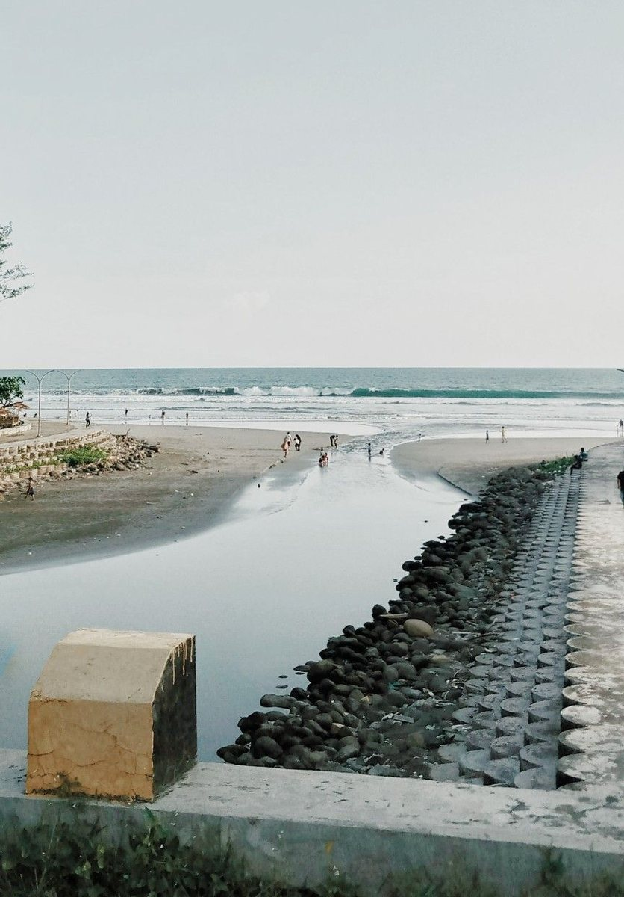
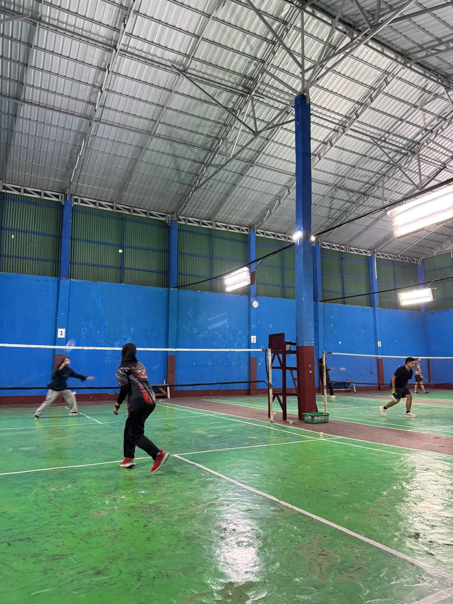
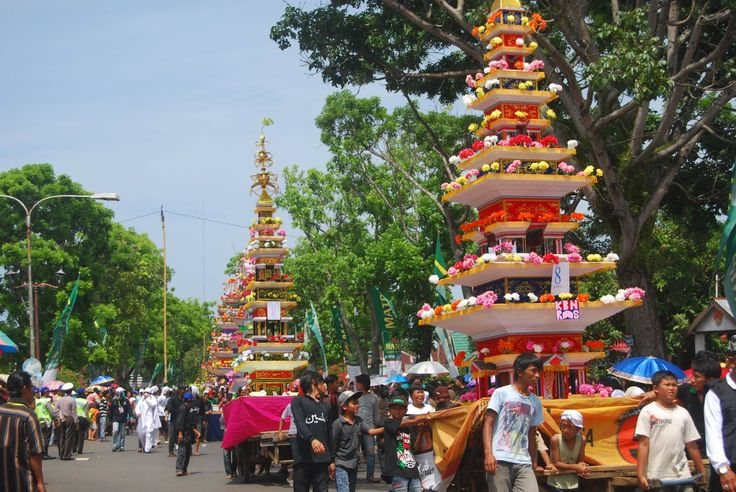
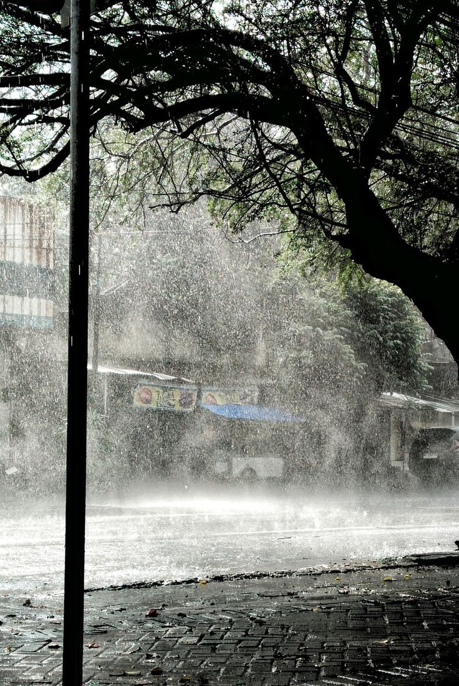

— / 04
Press play to go home.
Put your headphones on. Click play, or click any photo to start from that moment.
0:00 / 1:22 · volume 100%
a soundscape of home · Laksa Fadhil Yansen




— / 04
Put your headphones on. Click play, or click any photo to start from that moment.
0:00 / 1:22 · volume 100%